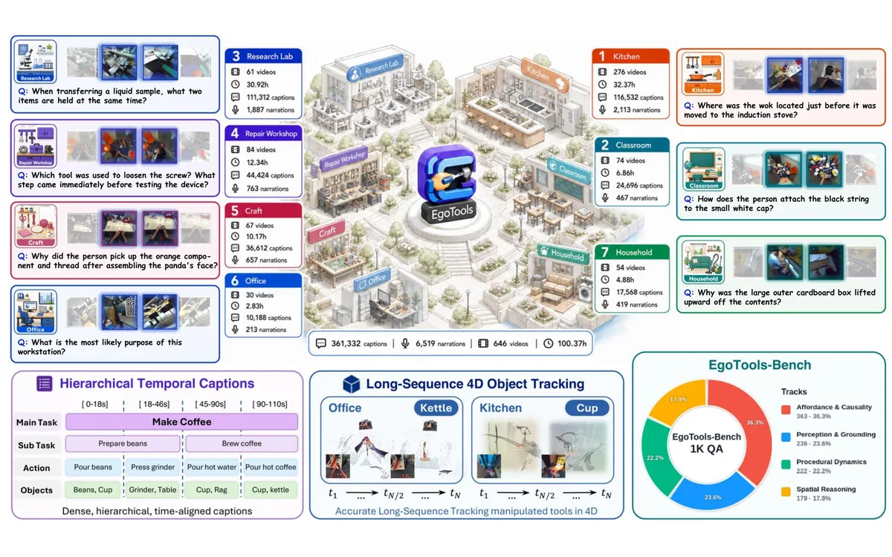
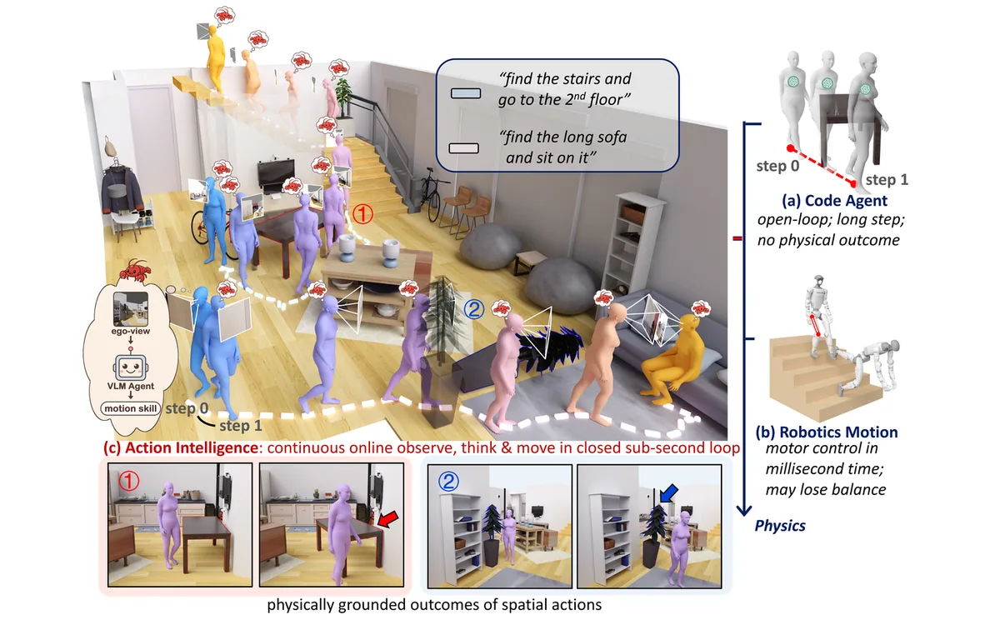
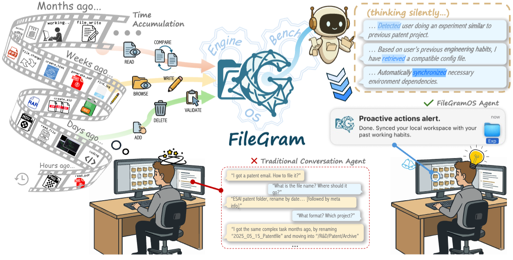
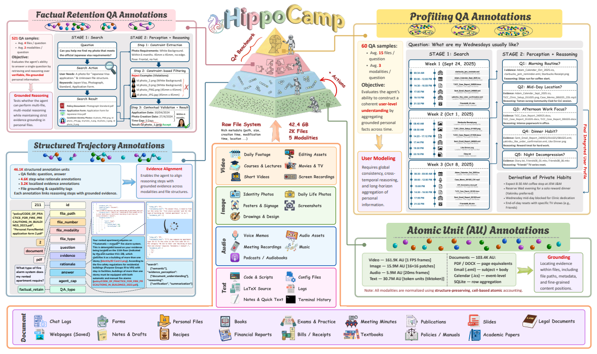
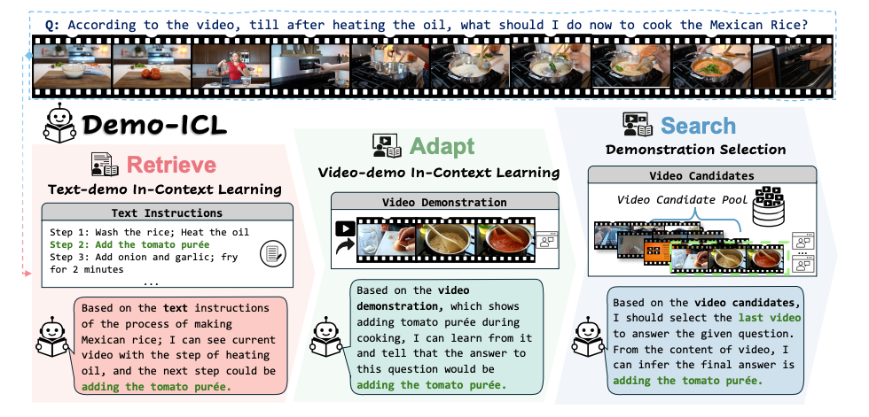
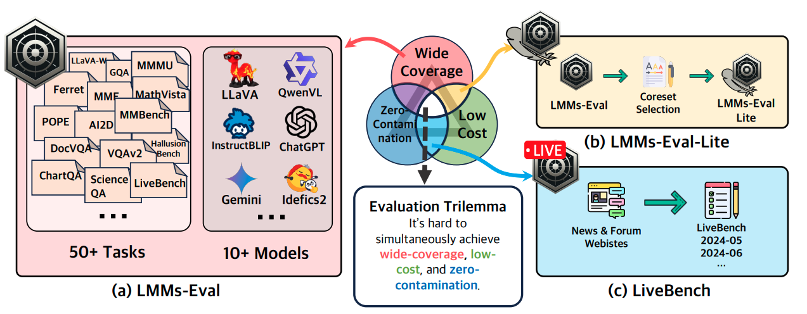
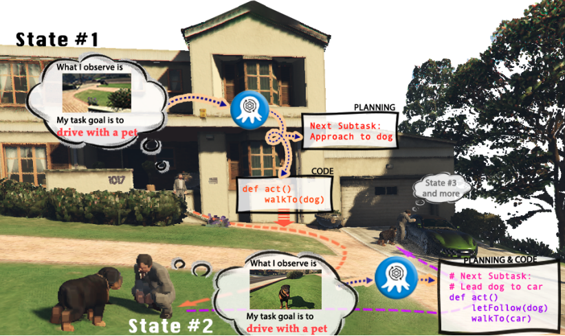
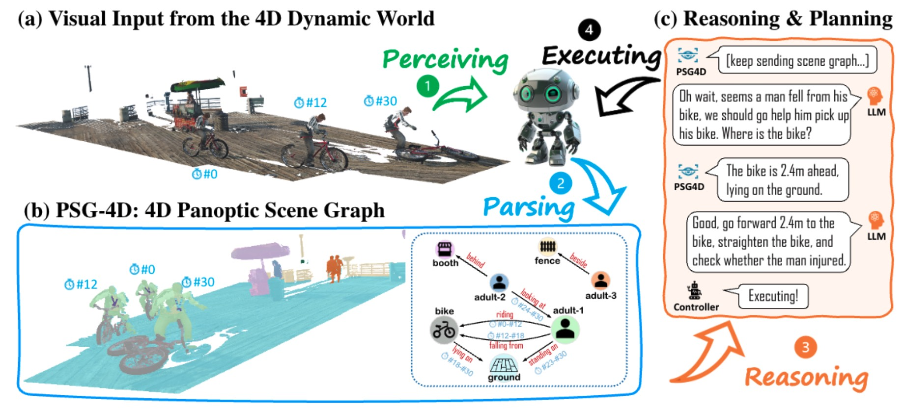
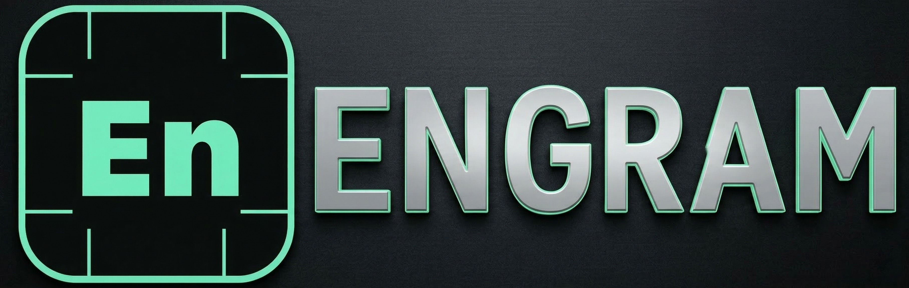
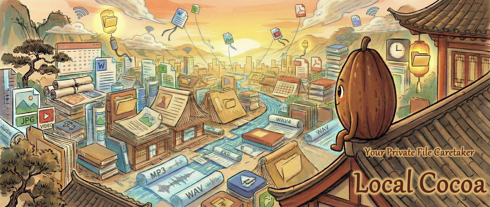

Shuai Liu
Ph.D. Student @ MMLab, NTU
I am a Ph.D. student at MMLab@NTU, supervised by Prof. Ziwei Liu.
Prior to this, I was a Founding Team Member at Synvo AI, advised by Prof. Chen Change Loy. I obtained my MEng (by Research) degree at MMLab@NTU, where I was fortunate to be advised by Prof. Ziwei Liu and to have received kind and valuable guidance from Jingkang Yang and Bo Li. I obtained my bachelor's degree in Artificial Intelligence from BUPT in 2024.
Additionally, I had a wonderful time as an intern at the Shanghai AI Laboratory under the mentorship of Prof. Ziwei Liu.
My research lies in Multimodality, Egocentric AI, and Agent.
Feel free to reach out for collaborations, questions, or just to chat!
News
-
EgoTools is released — a 100-hour egocentric dataset, a diagnostic benchmark, and an 8B reference model for reasoning about tools in real-world first-person video.
-
Demo-ICL is accepted by EMNLP 2026 (Findings).
-
EgoTools: Towards Tool-Centric Reasoning in Real-World Egocentric Videos is accepted by EMNLP 2026.
-
HumanCLAW is released — can VLMs truly act through a body, or do they lose track of themselves in the physical world?
-
EgoLife is selected as EgoVis 2024/2025 Distinguished Paper Award.
-
HippoCamp is accepted by ECCV 2026.
-
FileGram is out — what if your OS agent could learn who you are just by watching how you work with files?
-
Habitus is now in beta — your Mac gets a memory. It remembers how you work so you don't have to repeat yourself.
-
HippoCamp is out — we collected 3 real people's entire digital lives to build the first file-system memory dataset.
-
Released Engram Teams — upgraded version with team-based AI workflow support.
-
Demo-ICL is released — in-context learning for procedural video knowledge acquisition.
-
Released Engram — a privacy-first AI memory layer.
-
Graduated from NTU with MEng (by Research). Thesis: Egocentric Perception and Memory.
-
New blog post at Synvo AI: The Digital Avalanche: Building the Memory Layer for Next-Gen Corporation AI Agents.
-
Aero-1-Audio: Our first generation of lightweight audio models, outperforming Whisper and Qwen-2-Audio.
-
EgoLife is accepted by CVPR 2025.
-
LMMs-Eval is accepted by NAACL 2025 (Findings).
-
Joined Synvo AI as a Founding Team Member.
-
Joined MMLab@NTU as a master student.
-
Released LMMs-Eval, a comprehensive benchmark for evaluating Large Multimodal Models.
-
Octopus is accepted by ECCV 2024.
-
Released lmms-eval/v0.2.0 to support video evaluations.
-
Introduced Octopus, an embodied vision-language programmer that plays GTA-V.
-
PSG4D is accepted as NeurIPS 2023 (Spotlight).
Publications
Google Scholar* equal contribution
- 2026
-

-

-

-

-

- 2025
-

-

- 2024
-

- 2023
-

Projects
-
Habitus
A proactive AI agent built on FileGram's behavioral trace and content delta philosophy. Turns the proactive agent setting from research into a real product.
-

Engram Suite
Privacy-first AI memory layer — "Signal for AI Memory." End-to-end encrypted memory system for AI assistants with zero-knowledge sync.
-

Cocoa Suite
A local AI assistant that transforms files into actionable memory through semantic understanding. Fully private, on-device, zero cloud dependency.